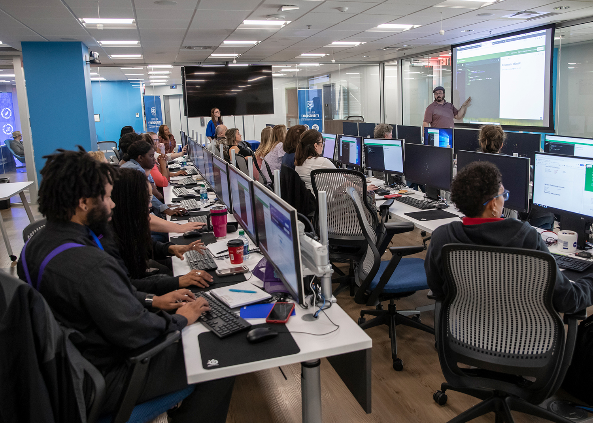

Tutkinnon suorittaneen osaaminen
Tieto- ja viestintätekniikan perustutkinnon suorittaneella on tieto- ja viestintätekniikan
tehtävissä edellytetty ammattitaito, ja hän osaa toimia yhteistyökykyisesti tieto- ja
viestintäteknisessä ympäristössä. Tutkinnon suorittanut osaa käyttää alan sanastoa,
selvittää asiakkaan tarpeita ja tehdä asiakaslähtöisiä ratkaisuja tieto- ja
viestintäteknisiin
tehtäviin liittyen. Hän varmistaa, että työn lopputulos vastaa työlle asetettuja
vaatimuksia.

Työtehtäviä, joissa tutkinnon suorittanut voi toimia

Osaa tehdä elektroniikka-asennuksiin liittyviä asennus-, testaus- ja huoltotöitä.
Hän osaa käsitellä oikein elektroniikka-asennuksissa tarvittavia komponentteja ja
materiaaleja sekä käyttää tarvittavia työ- ja mittavälineitä.

Hyvinvointiteknologia-asentaja
Osaa toimia sosiaali- ja terveysalan toimintaperiaatteiden ja arvojen mukaan.
Hän osaa asentaa turvalaite- ja hyvinvointiteknologiajärjestelmiä sekä hyödyntää
hyvinvointiteknologiaa asiakkaan toimintakyvyn ylläpitämiseksi. Hän varmistaa
laitteiden turvallisen käytön ja opastaa asiakasta hyvinvointiteknologian käytössä.

Osaa tehdä tietoverkkokaapeloinnit asiakkaan vaatimusten ja ohjeiden mukaisesti.
Hän huomioi tietoliikenneverkkojen rakenteet ja käytetyt materiaalit sekä tekee
tarvittavia mittauksia ja testauksia järjestelmän toimivuuden varmistamiseksi.

Osaa toimia työasemien, verkko- ja lisälaitteiden sekä toimialueiden muodostamassa
tieto- ja viestintäteknisessä ympäristössä. Hän toimii osana tietohallintoa sekä auttaa
käyttäjiä erilaisissa teknisissä ongelmissa asiakkaan tiloissa tai etäyhteyden välityksellä.

Osaa ohjelmoida, hyödyntää rajapintoja, käsitellä tietoa sekä käyttää versionhallintaa.
Ohjelmistokehitystiimin jäsenenä toimiessaan hän kommunikoi asiakkaan kanssa, suunnittelee
ohjelmiston toteutuksen ja varmistaa toteutettavien toimintojen laadun.